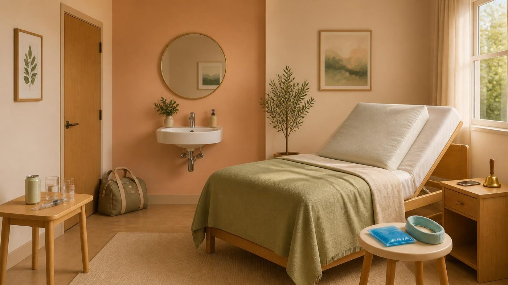

住院 4 天（12/17 入院、12/18 手術、12/20 出院）。建議休息 2 週、1 個月內不運動。
傷口在口腔內，免拆線，約 6 週會消失；臉頰後面有小傷口。疼痛約 5/10。
兩週後：可以走路 15 分鐘
一個月後：可以騎車
點左邊的狀態就換下一個：要買 → 已買 → 在用。點名字可以改。
往右滑看下一段，「現在」會自動標出來。點一段看完整內容。
| 階段 | 安素 | 高蛋白飲 | 滴雞精 | 明治濃湯 |
|---|---|---|---|---|
| 醫院 3 天 | 3–4 罐 | 3–4 瓶 | 3–4 包 | 2–3 包 |
| 哥哥家 14 天 | 12–14 罐 | 12–14 瓶 | 14–20 包 | 5–8 包 |
| 回家後（第 3 週起） | 6–8 罐 | 6–8 瓶 | 6–10 包 | — |
| 四種各有什麼用安素＝亞培安素、高蛋白飲＝義美、滴雞精＝華齊堂、濃湯＝明治。 | ||||
| 熱量 | 極高 | 中 | 低 | 中～高 |
| 蛋白質 | 中～高 | 極高 | 低 | 中 |
| 定位 | 全方位能量底座 | 強力組織修復 | 快速補元氣 | 鹹味救贖 |
| 什麼時候喝 | 當正餐主食 | 需要加速傷口癒合時 | 精神不濟、虛弱時 | 甜的喝膩、想換口味時 |
這是術後休養的小房間。點房間裡的東西，看那件事該怎麼做。

住院、填表、回診時要報的東西放這裡，改了就自動存。
10/5 白醫師、11/9 羅醫師，帶著這頁和 Mood Board 照片去。11/9 也可以問診所能不能給一份齒列紀錄。
下巴太短、太後縮，下庭比例偏短，側臉看起來太圓、少了俐落的下巴線條。
醫師，我很怕術後下巴變太短、下巴後縮，側臉看起來太圓、下庭比例偏短。我希望下巴能保有適當的長度和向前的支撐度，讓下巴線條順暢俐落，但又不要太過銳利。
把最介意的地方講出來後，醫師能用具體的骨頭移動方向、毫米數或類似案例照片回應你，而且你感覺他懂你要的美感，就可以放心交給他。
個人經驗紀錄，醫療處置請以主治醫師指示為準。